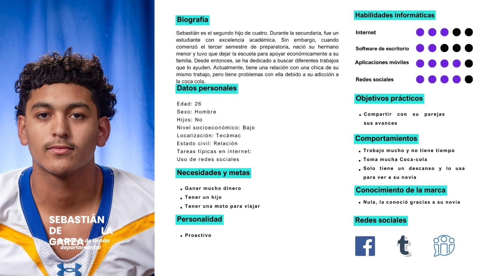
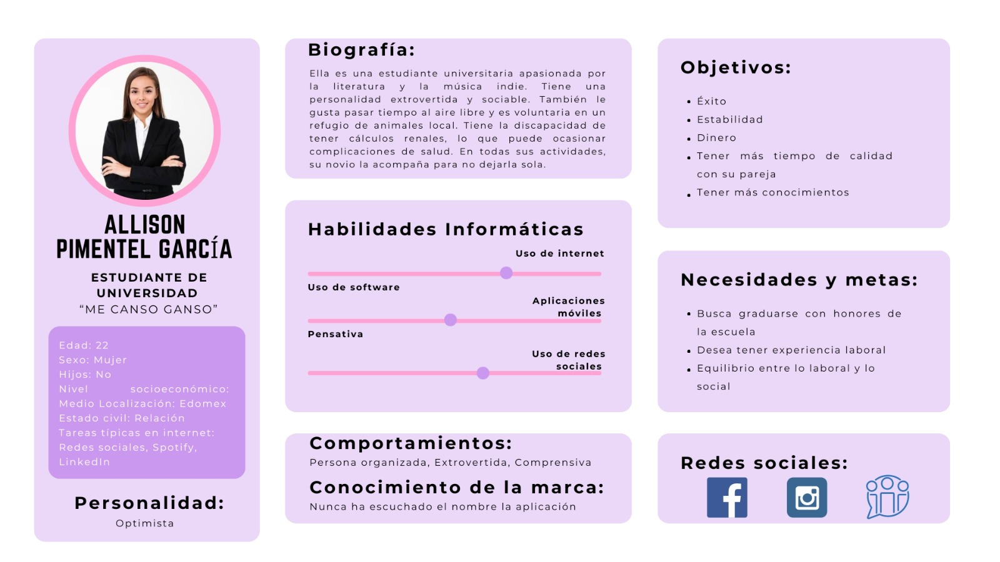
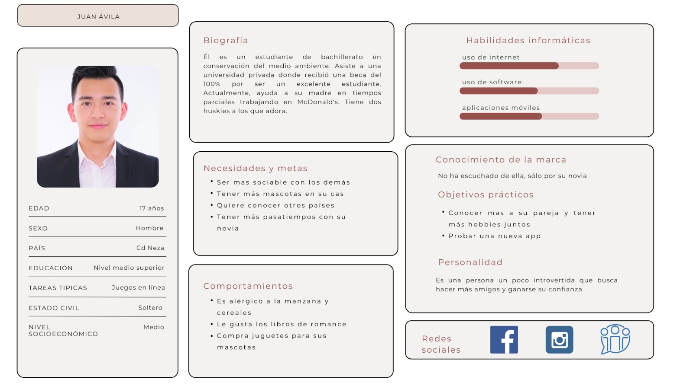

INTEGRANTES DEL EQUIPO
- Leal Aguilar Diana Citlali
- Nieto Cortés Leonardo
- Ortega Hernandez Kevin Alberto
- Rodríguez Camilo Ricardo Josué
- Sánchez Padrón Itzya Lucero
GRUPO: 1642
OBJETIVO
Desarrollar una aplicación para fomentar el apoyo mutuo y la corrección de hábitos de consumo de agua insuficientes entre parejas.
ANÁLISIS
Análisis del usuario
Público objetivo:
- Edad: Adolescentes y jóvenes adultos (13-30 años).
- Sexo: Ambos sexos.
- Nivel socioeconómico: Medio.
- Ubicación: México.
- Intereses: Salud, bienestar, fitness, relaciones, medio ambiente.
- Comportamientos: Uso de redes sociales, juegos móviles, preocupación por la salud personal y la de su pareja.
Necesidades:
- Aumentar su consumo de agua y mejorar sus hábitos de hidratación.
- Sentirse motivados y apoyados por su pareja para alcanzar sus objetivos.
- Diversificar y hacer más atractiva la experiencia de beber agua.
Análisis de las tareas
Lista de tareas a realizar en su aplicación
- Registrarse.
- Vincularse con su pareja (QR, vínculo).
- Generar los recordatorios.
- Escoger el avatar.
- Alimentar el avatar.
- Confirmar la acción.
- Enviar recordatorio.
Lista de objetos para cada una de las tareas
- Registrarse: Cajas de texto y botón de registro.
- Vincularse con su pareja (QR, vínculo): Imagen QR para escanear o enlace para compartir mediante WhatsApp o correo electrónico.
- Generar los recordatorios: Caja de texto para el asunto y alarmas programables.
- Escoger el avatar: Recuadro con 3 avatares a escoger.
- Alimentar el avatar: Botón de confirmación de la pareja para alimentarlo.
- Confirmar la acción: Botón para confirmar.
- Enviar recordatorio: Caja de texto preestablecido o editable.
Lista de acciones sobre los objetos para concretar la tarea
- Registrarse: Dar clic en botón de registro y botón de confirmar.
- Vincularse con su pareja (QR, Vinculo): Escanear o dar clic en el enlace.
- Generar los recordatorios: Dar clic en el recordatorio o deslizar para eliminar.
- Escoger al avatar: Seleccionar cualquiera de los 3 avatar para confirmar.
- Alimentar el avatar: Confirmación por parte de la pareja para llevar a cabo la acción.
- Confirmar la acción: Botón para confirmar
- Enviar recordatorio: Presionar el botón “enviar” con el texto preestablecido o el texto editable.
DESARROLLO
Usuario
  
Escenario
Sebastián de la Garza
26 añosSebastián de la Garza, un joven de 26 años, ha estado trabajando arduamente desde que dejó la escuela en tercer año de preparatoria para ayudar a mantener a su familia. Es el segundo de cuatro hermanos y siempre ha sentido la responsabilidad de cuidar de los suyos. A pesar de su falta de experiencia con la tecnología, ha encontrado a las redes sociales como su principal forma de mantenerse conectado con el mundo exterior durante sus escasos momentos de descanso.
En su día a día, Sebastián se enfrenta a largas jornadas laborales en una tienda departamental, donde conoció a su pareja. Sueña con tener un hijo propio y explorar el mundo en una moto ya que le gustaría sentir la velocidad y libertad, pero sabe que, antes que nada, debe asegurarse de que su familia esté bien.
Una noche, después de un agotador día de trabajo, Sebastián recibe una llamada urgente de su madre. Al contestar, puede percibir la preocupación en su voz mientras ella le expresa su inquietud. Su madre, con tono cariñoso pero directo, le comenta que ha notado que últimamente parece descuidar su salud, especialmente en lo que respecta a la hidratación. Le recuerda lo importante que es mantenerse saludable para poder seguir apoyando a la familia y le insiste a prestar más atención a su bienestar.
Para Sebastián, esta llamada es un momento de introspección. Las palabras de su madre resuenan en su mente, recordándole que cuidar de sí mismo es fundamental para poder cuidar de los demás. La conversación le hace reflexionar sobre su rutina diaria y cómo puede mejorar sus hábitos de salud para estar en mejores condiciones físicas y emocionales.
Después de colgar el teléfono, Sebastián se siente motivado para hacer un cambio. Recuerda también que hace poco tuvo una discusión con su novio, ya que ella siempre se quejaba de que él sólo tomaba refrescos y no cuidaba su salud aunque ella le ofreciera su propia agua natural o le llevara aguas de frutas naturales. Es en ese momento decide platicar con su novia sobre la situación y empiezan a buscar opciones que lo ayuden a cambiar su mal hábito, hasta que encuentran Hydro-Sync, siendo una herramienta que no sólo le ayudará a cuidar de su salud, sino también a demostrar a su madre, su novia y a su familia que toma en serio su bienestar.
Después de colgar el teléfono, Sebastián se siente motivado para hacer un cambio. Recuerda también que hace poco tuvo una discusión con su novio, ya que ella siempre se quejaba de que él sólo tomaba refrescos y no cuidaba su salud aunque ella le ofreciera su propia agua natural o le llevara aguas de frutas naturales. Es en ese momento decide platicar con su novia sobre la situación y empiezan a buscar opciones que lo ayuden a cambiar su mal hábito, hasta que encuentran Hydro-Sync, siendo una herramienta que no sólo le ayudará a cuidar de su salud, sino también a demostrar a su madre, su novia y a su familia que toma en serio su bienestar.
Cada día, Sebastián y su pareja reciben recordatorios amigables de Hidro-Sync para beber agua regularmente. Se motivan mutuamente, compitiendo amistosamente para ver quién puede cumplir mejor con sus objetivos diarios de consumo de agua. Sebastián encuentra en esta dinámica una forma de cuidar tanto de su salud como de la de su pareja, mientras sueña con un futuro en el que pueda tener un hijo.
Después de semanas de seguir el plan de hidratación de la aplicación, Sebastián recibe una notificación especial. Un avatar de plantita en la aplicación está radiante de felicidad, indicando que él y su pareja han logrado su objetivo de consumo de agua. Esta pequeña victoria le llena de alegría y le da un impulso de confianza en su capacidad para alcanzar sus metas, tanto personales como familiares. Con Hidro-Sync como su aliado, Sebastián se siente más capacitado que nunca para cuidar de sí mismo y de los que más ama.
Allison Pimentel García
22 añosEstudiante universitaria apasionada por la literatura y la música Indie, es una joven a raíz de que empezó con dolores en la parte posterior izquierda, En una tarde su pareja Fernando de la Garza, la motivo a ir al médico para hacerse estudios por causa del malestar.
Al recibir sus resultados el diagnostico fue que tenía cálculos renales, lo que aparte de la medicación correspondiente la cual una de las más importantes era que tenía que beber mucha agua. Esa misma tarde tomando en cuenta el cómo tenía que tratarse, Fernando daba vueltas por su cabeza para ver la manera de que Allison pudiera cambiar su humor y hacerla sentir optimista de que se mejorara, cabe resaltar que Allison tras tener demasiados trabajos y uno de ellos le tomaba prácticamente gran parte de su día era estar en un refugio de animales o en sus tiempos libres realizar senderismo, su alimentación no era la más adecuada por lo que lleva que tampoco ingería mucha agua dentro de sus actividades. Así que navegando por internet, Su novio Fernando encontró una app en la cual era dedicada especialmente para parejas, Que tenía un buen impulso o así lo describían las parejas que la habían descargado.
Esta app se llama “Hidro-Sync” en la cual como pareja al instalarla se vinculan ambos y dentro de ella se pueden hacer recordatorios 1 a 1 para cumplir con un objetivo al día y así ambos estuvieran monitoreando donde quiera que estuvieran sin necesidad de estar todo el tiempo juntos. Fernando y Allison agregaron el recordatorio de tomar agua ambos una cierta cantidad al día, Y así mismo al cumplir estas acciones estarán regando una planta que crecerá, Lo cual era muy acertado para que Allison no dejara de lado su tratamiento y así pudiera mejorar tanto su calidad de vida como de salud.
Con el tiempo tanto como Fernando como Allison tenían más conexión dentro de su relacion gracias a la aplicación, Así mismo con forme iban haciendo sus recordatorios para tomar agua, iban regando y haciendo crecer su planta virtual que ellos lo tomaron como una muestra de crecimiento tanto de su amor como de su responsabilidad con la salud de Allison la cual iba mejorando consideradamente.
Todo esto llevo a que ambos lo platicaron en su circulo de amigos, En especial a los que tenían pareja para así poder tener una mejor conexión y una buena salud, Y es así como Hydro-Sync llego a un buen número de personas que hicieron uso de la aplicación.
Juan Ávila
17 añosJuan Ávila es un estudiante del cual tiene 17 años, que estudia en un Bachillerato en la carrera de Conservación del Medio Ambiente en una universidad privada, él es un estudiante sobresaliente donde tiene una beca del 100% , en la escuela conoció a una chica de su salón la cual se llevaba muy bien con ella y en esa relación hizo que se hicieran novios, Juan pasaba todas sus tarde con ella y los fines de semana iba a su casa a hacer tareas juntos, Juan siempre ha vivido con su madre la cual es una trabajadora de tiempo parcial en una oficina, lo cual ocasiona que llegue tarde a su casa todos los días.
Juan se daba cuanta que su madre se veía mucho mas cansada de lo normal debido que en cuanto llegaba a la casa se dedicaba a hacer aquellos pendientes que hicieran falta y para volverse a ir a otro día a trabajar, su madre y juan casi no se veían mucho por lo que su madre le dejaba dinero para la escuela desayunara algo y comiera algo al llegar a la casa normalmente prefería guardar lo del desayuno para invitar a su novia algún lugar y lo de la comida era comprar algún refresco y algo preparado en la calle. Así que Juan debido a la situación que su madre estaba pasando decido buscar ofertas de empleo para ayudar a su madre con los gastos y que ella pudiera descansar los fines de semana que eso días los tomaba como horas extras. Con la ayuda de su novia buscaron un empleo flexible para el, afortunada mente encontró uno en McDonald’s donde le convenia a el por el salario y aparte así no perdía la beca que tenia en la escuela para él fue una suerte.
Debido a esto Juan y su novia pasaban menos tiempo juntos entre el trabajo de el y la escuela casi no se veían y las tardes de fin de semana ahora Juan las ocupaba para descanso y poder estudian lo de la semana de la escuela. Así que empezaron a tener problemas debido a que Juan estaba muy cansado como para salir como antes y su novia porque sentía que ya no le prestaba la misma atención que antes, ambos se reclamaban que no tenían algo que nos conectara cuando estuvieran lejos, intentaron por todos los medios posibles estar mas cerca, Juan por un lado empezó a llamar a su novia en sus descansos de trabajo.
Y por otro lado ella decidió igual visitarlo en sus tiempos libres, pero para ambos empezó a hacer cansado debido a que a veces no podía Juan por que tenia que cubrir a otro compañero porque había faltado o simplemente no estaba y su novia se molestaba por que para ella pasa esto muy seguido. Juan cuando pasaba esto decidida a salir a tomar aire y servirse un vaso de refresco para poder refrescarse según el para subirse el estado de animo con algo de azúcar y su novia cuando llegaba a su casa molesta hacia lo mismo debido a que su casa igual se consumía demasiado refresco debió a que sus papas casi no estaban. En el transcurso de su rutina diaria, Juan y su novia se dieron cuenta de que no consumían el agua suficiente, Juan por un lado tenía a su disposición la fuente de refrescos ilimitada de su trabajo y su novia tomaba refrescos para refrescarse del calor. Decidieron utilizar la tecnología para resolver este problema. Descubrieron una aplicación que tiene como objetivo promover hábitos saludables en pareja, como beber agua juntos la cual se llamaba Hydrosic.
Por lo tanto, registraban cada vez que uno de ellos tomaba un vaso de agua en la aplicación y recibían puntos por cada vaso consumido. Esta competencia amable les recordó la importancia de mantenerse hidratados y les permitió compartir momentos de cuidado mutuo a distancia. Con el tiempo, Juan y su novia descubrieron que esos momentos les ayudaban a fortalecer su vínculo y mantener una conexión incluso en los días más ocupados. Además, el uso consciente del agua no solo tenía un impacto positivo en su bienestar físico.Juan, su novia con el paso de usar la aplicación se sintieron mucho mejor a parte de que estaban conectados por ella podrían ayudarse mutuamente, así que decidieron platicarles de ella a sus amigos que tenían pareja y a los que igual pasaban una situación como la de ellos, para que así mas personas estuvieran conectadas por ella y de igual forma los beneficiara.
Storyboard
.png)
.png)
.png)
.png)
.png)
.png)
.png)
PROTOTIPO
Instructivo
- Crear una Cuenta o Iniciar Sesión: Crea tu cuenta ocupando google o crea una cuenta ingresando tu dirección de correo electrónico y creando una contraseña segura.
- Conectar con tu Pareja.
- Registrar tu Consumo de Agua
- Seguir tu Progreso y Motivar a tu Pareja
- Celebrar los Logros
Lista de tareas
- Ingresa tus datos personales dentro de la app y seleciona “continuar”.
- Ingresa el código de vinculación de tu pareja.
- Comparte tu código con tu pareja para que se puedan vincular (si tienes problemas puedes generar un nuevo código) y selecciona “continuar”.
- Si realizaste bien el paso deberá aparecer en la pantalla el mensaje de “vinculación completada con éxito”.
- Ingresa tu nombre de usuario y seleciona “continuar”.
- Selecciona tu avatar del catálogo disponible y selecciona “continuar”.
- Si has tomado agua el día de hoy selecciona el botón “registrar un vaso de agua”.
- Al momento de registar que has bebido agua, en la app se deberÁ de regar tu planta.
- Te mostarÁ un mensaje “has regado tu plantita”.
- Envía un mensaje de “recordatorio” a tu pareja.
- Dirígete a “calendario de pareja” y marca que has tomado agua ese día.
- Regresa a la página principal.
- Selecciona tu “cuenta” y después “editar metas” y cambia la meta.
- Regresa a la página principal y selecciona “configuración”.
- Cambia los siguientes parámetros:
- Correo electrónico
- Cambiar contraseña
- Editar nombre
- Regresa a configuración y activa “notificaciones”.
- Regresa a configuración y revisa cada apartado de “soporte”.
- Regresa a la página de inicio y sal de la aplicación.
PROTOTIPO UNO
.png)
.png)
.png)
PROTOTIPO DOS
.png)
.png)
.png)
.png)
.png)
EVIDENCIA PROTOTIPO UNO


OBSERVACIONES PROTOTIPO UNO
Al tener las dos propuestas del diseño de la interfaz que se elaborarón nos gusto más la propuesta del prototipo 1, para nosotros fue la mas adecuada teniendo una intefaz más llamativa.
- A los usuarios se les dificulto la parte de colocar las contraseñas para crear la cuenta.
- Como se iniciaba sección con google.
- Como ingresar el código de la pareja.
- En el momento de elegir avatar por elección del usuario o por aleatorio.
- Como usar la configuración y el perfil de usuario.
- Colocar un botón de regreso al perfil.
- Ingresar ambos codigos de vinculación.
PROTOTIPO DE INTERACCIÓN
.png)
.png)
.png)
.png)
.png)
.png)
.png)
.png)
.png)
.png)
.png)
.png)
.png)
.png)
.png)
.png)
OBSERVACIONES DE PROTOTIPO DE ITERACIÓN
- El usuario estaba más familiarizado con la applicación que la primera prueba realizada.
- La interfaz estaba más completa y era más fácil entenderla.
- Al igual que la vez pasada, el usuario tuvo problemas al momento de ingresar el código y en la parte de cómo vincularse con su pareja.
- Se observó que falta una pantalla de regreso a la página sin ningún tipo de leyendas.
- Al usuario dudó en cómo crear su cuenta mediante Google, así que prefirió crearla ingresando su correo de forma manual y creando su contraseña.